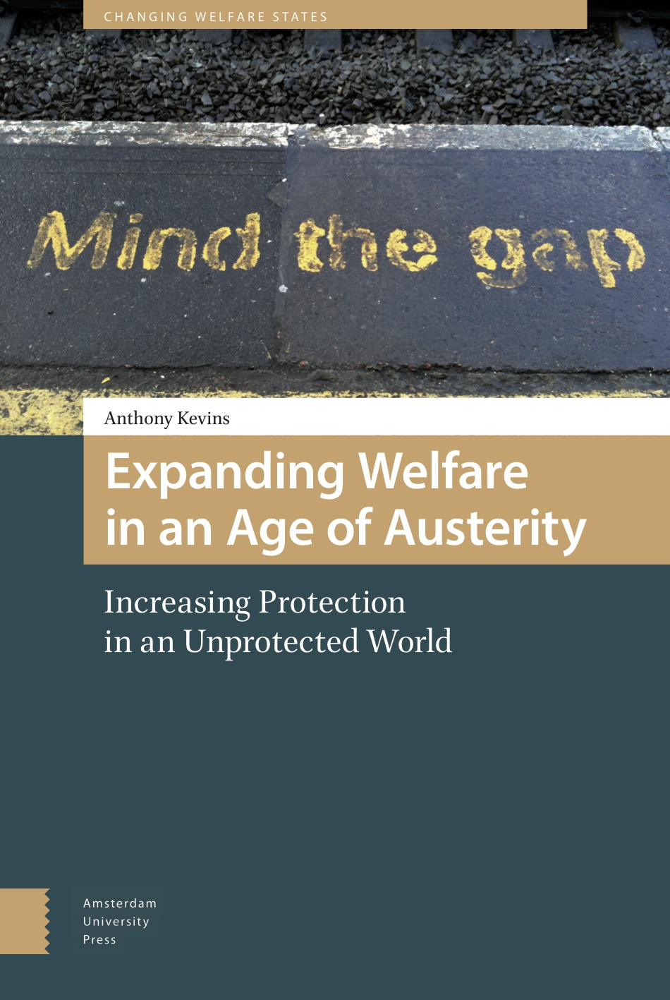

Chercheur Marie Curie
L’École de gouvernance
Université Utrecht
Courriel : a.v.kevins@uu.nl
Veuillez trouver ci-dessous une présentation de mes projets de recherche actuels et passés. Vous pouvez également consulter mon CV complet ici.
Qui devrait avoir un mot à dire ? Préférences pour la représentation inégale
La représentation équitable est le fondement de la démocratie représentative, mais est-ce que les citoyens y sont effectivement favorables ? Comme on peut le constater en observant les débats houleux sur l’influence de certains groupes sociaux, les gens peuvent avoir des positions très diverses sur la représentation inégale (c’est-à-dire l’influence différentielle sur le processus politique). Un citoyen peut croire, par exemple, qu’en matière de politiques d’intégration, les immigrés récents méritent d'avoir une influence accrue (à cause de leur degré d’affectation), une influence diminuée (à cause de leurs intérêts particuliers), ou une influence égale à celle des autres. De surcroît, le même citoyen pourrait simultanément avoir des préférences très diverses quant à d’autres groupes sociaux ou domaines politiques (par exemple, au sujet des banquiers et de la législation financière, ou des retraités et des services aux aînés). Ces opinions importent, car elles influencent le comportement des politiciens à l’égard de l’élaboration des politiques ainsi que pendant les campagnes électorales. Or, on ne sait que très peu de choses sur ces préférences.
Financé par une bourse Marie Curie, ce projet explore donc les attitudes envers l’influence des groupes spécifiques sur les enjeux qui les préoccupent. Pour ce faire, je me concentre sur les États-Unis et les Pays-Bas, afin de profiter de leurs similitudes et différences clés. En effectuant des expériences de sondages innovateurs et recueillant des données de panel auprès de ces deux pays, je pourrai mieux comprendre (1) la nature et (2) les déterminants principaux des préférences pour la représentation inégale. Les résultats du projet auront ainsi des implications importantes pour les ONGs, les chercheurs ainsi que pour quiconque qui veut mieux comprendre et atténuer les tensions entre les majorités et minorités dans les démocraties.
L’universalisme et l’État-providence
À quel point les citoyens sont-ils engagés envers l’universalisme, la redistribution et l’État-providence ? Quels sont les facteurs qui influencent cet engagement ? Par mon affiliation au projet UNIWEL (universalism and the welfare state) à l’université d’Aarhus, je me suis penché sur divers sujets liés à ce thème, incluant :
Une partie importante de cette recherche est basée sur un sondage original, effectué aux États-Unis et dans neuf pays d'Europe occidentale. Cette enquête unique examine les préférences en matière de politique sociale selon différentes perspectives, y compris les préférences liées à la perception d’équité, d’immigration et de compromis de politique fiscale. Je suis actuellement en train de rédiger (avec Kees van Kersbergen, Carsten Jensen et Alexander Horn) un livre basé sur ces données.
Les inclus et les exclus de l’État-providence
Qui mérite notre appui collectif ? Constituant une question clé de notre époque, les réponses ont varié radicalement à travers le temps, les pays et les domaines politiques. Alors que d’un côté, plusieurs systèmes de protection sociale se sont caractérisés par des lacunes dans leur couverture, la façon par laquelle les gouvernements ont étendu l’accès aux allocations varie grandement. D'un autre côté, ce processus a été contrebalancé par des efforts pour restreindre l’accès, afin de décourager la dépendance et de limiter les dépenses sociales. Ces changements politiques ont des ramifications importantes sur la pauvreté, l’inégalité et le soutien populaire pour l’État-providence.
Ma recherche sur ce sujet a été publiée dans le Journal of European Social Policy et dans mon livre Expanding Welfare in an Age of Austerity, paru récemment (2017) chez Amsterdam University Press (disponible en Amérique du Nord chez University of Chicago Press). Cet ouvrage approfondit le dilemme auquel les partis et syndicats de gauche sont confrontés face aux lacunes des couvertures sociales et à l’austérité, lorsqu’ils doivent choisir entre la protection des acquis aux inclus et l’extension de la couverture aux exclus. Il comprend deux comparaisons entre la France et l’Italie (soutenues par plus d’une demi-année de recherche sur le terrain) ainsi qu’une étude quantitative et qualitative de la généralisabilité des résultats. Je constate que des facteurs-clés, normalement associés avec l’Europe du Sud, ont influencé les positions des partis et des politiques directement (par la création d'avantages organisationnels) et indirectement (par le conditionnement de l'opinion publique). Dans l’ensemble, le livre fait avancer les débats sur le rapport entre l’accès à la sécurité sociale et les préférences en matière de politiques sociales, tout en offrant un aperçu des défis réels auxquels sont confrontées les politiques actuelles dans le cadre des programmes d'austérité.